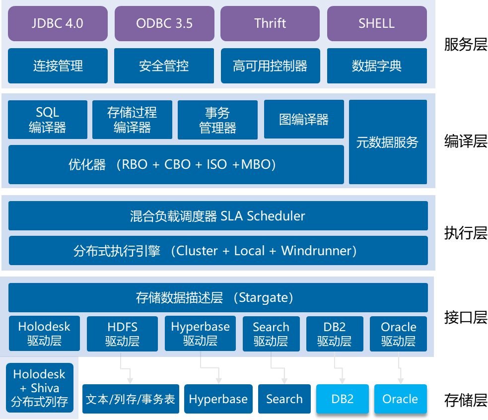

中挪项目
中挪项目中期目标：研究基于容器架构支持区块链的大数据分布式高性能存储、计算和管理技术；供应链过程数据的区块链和大数据平台相结合的可信计算技术；交互式、无编程、可视化的大数据建模和分析技术；基于多源数据的智能化运维技术。
研究情况：为了解决大数据分布式存储问题，星环科技项目团队自主研发了海量数据的统一存储管理技术，提供统一的计算引擎和各种数据存储引擎的连接能力，可以通过统一的计算引擎对接多种不同数据存储引擎进行计算。统一数据存储管理支持多种分布式存储系统/引擎，包括分布式文件系统、基于内存或固态硬盘的分布式列式存储、分布式搜索引擎、分布式NewSQL数据库。
通过ETL工具Transporter跨系统的抽取数据，做清洗加工后，统一由Inceptor存储在HDFS、Holodesk、Hyperbase、KunDB各种存储之上，实现数据集成和共享。Inceptor作为统一的SQL引擎，用于操作各类数据源，支持通过SQL DML语句在各个存储引擎中定义元数据，同时允许在多种数据源之中进行交叉查询。打通不同系统之间的数据壁垒，实现数据灵活自由的流转，构成统一的数据平台。针对数据在SSD闪存盘上进行加速存储技术的研发，成果申请软件著作权“星环分布式闪存数据库软件V3.0”[37]一项。

供应链海量数据统一存储管理技术架构